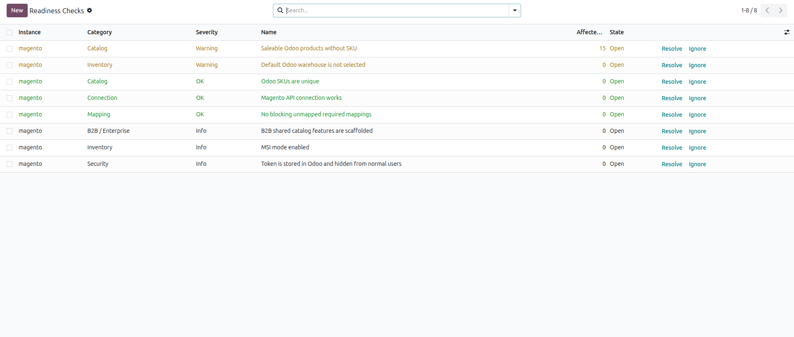
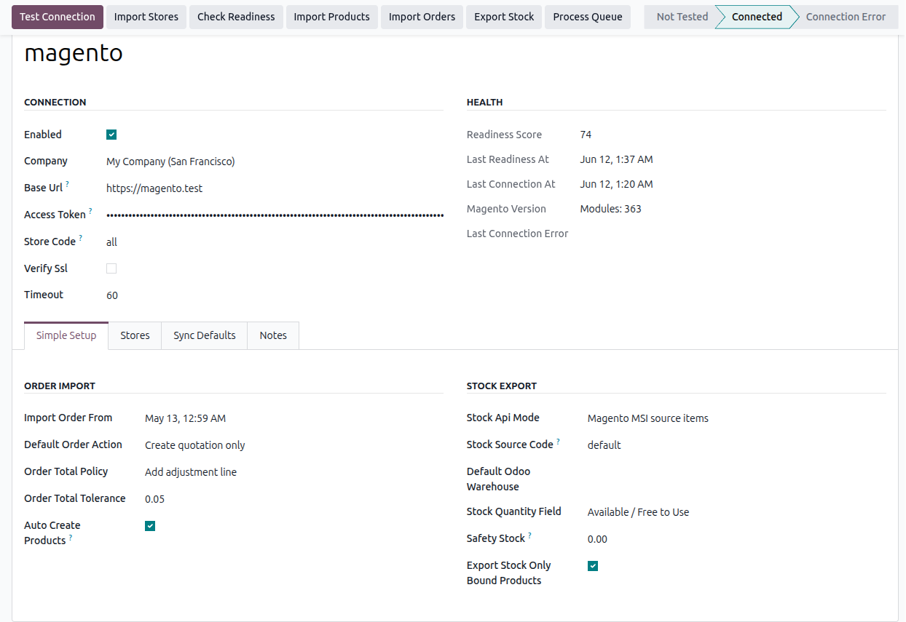
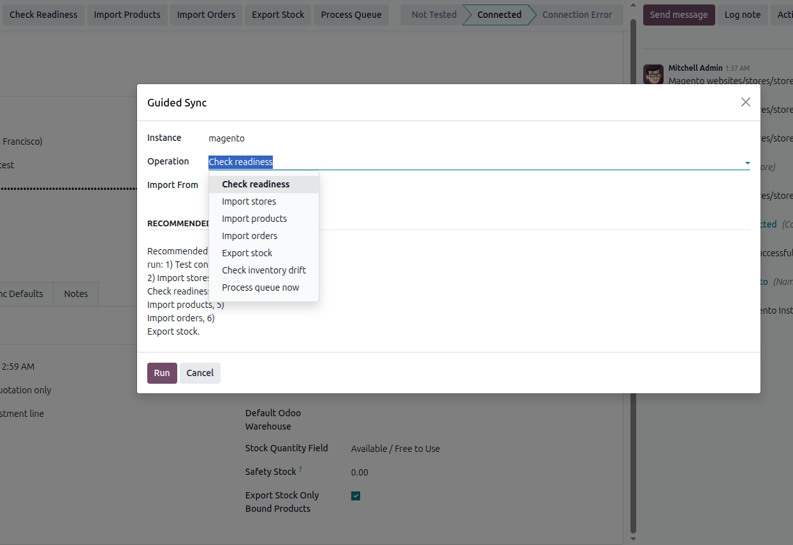
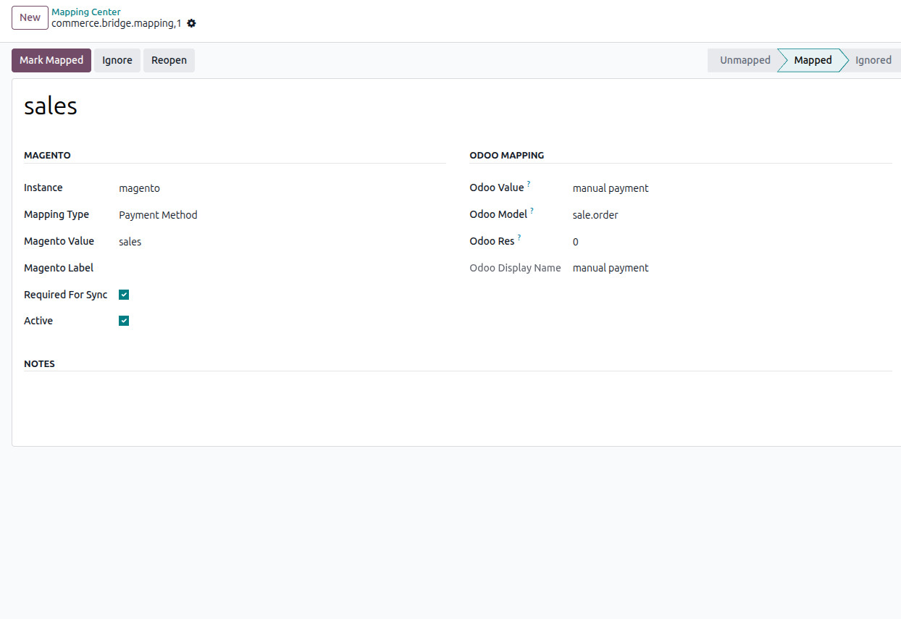
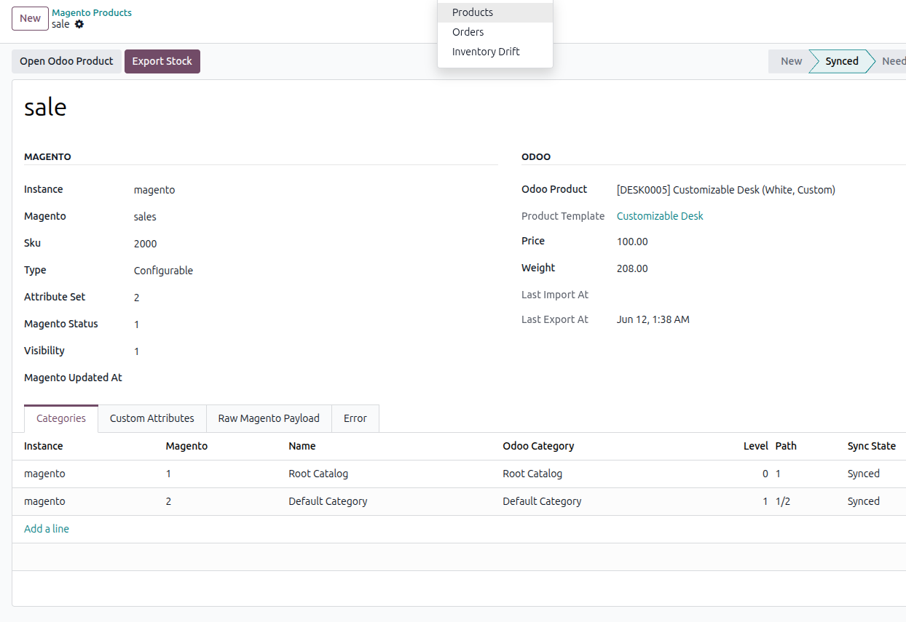

<div class="container-fluid" style="background-color: #f6f7fb; color: #172033; font-family: -apple-system, BlinkMacSystemFont, 'Segoe UI', Roboto, Helvetica, Arial, sans-serif; padding: 20px 0 80px 0; line-height: 1.6;">
    <div class="container" style="max-width: 1200px; margin: 0 auto;">

        <!-- ==========================================
             HERO SECTION (Odoo Safe - Solid Colors)
             ========================================== -->
        <div class="row align-items-center" style="background-color: #1d1028; border-radius: 24px; padding: 40px 20px; margin-bottom: 60px; box-shadow: 0 15px 35px rgba(0,0,0,0.1);">
            <div class="col-lg-8" style="padding: 20px;">
                <div style="display: inline-block; background-color: #3a183f; border: 1px solid #f26522; color: #ffffff; padding: 8px 16px; border-radius: 50px; font-size: 13px; font-weight: 800; text-transform: uppercase; margin-bottom: 24px;">
                    &#10004; Verified for Odoo 16, 17, 18 & 19
                </div>
                <h1 style="font-size: 42px; line-height: 1.1; margin: 0 0 20px 0; font-weight: 900; color: #ffffff;">
                    Magento 2 Connector Pro <br><span style="color: #fbd2bd;">Official Documentation</span>
                </h1>
                <p style="font-size: 18px; margin: 0 0 30px 0; color: #e8ebf2; max-width: 700px;">
                    Welcome to the most transparent, operations-grade integration ever built for Magento and Odoo. This comprehensive manual covers everything from configuring MSI stock rules and order total guardrails, to operating the self-healing queue engine and fulfilling automated shipments.
                </p>
                <div>
                    <span style="display: inline-block; background-color: #f26522; color: #ffffff; padding: 14px 28px; border-radius: 12px; font-weight: 800; font-size: 16px; margin-right: 15px; margin-bottom: 10px;">&#128214; Read the Manual</span>
                    <span style="display: inline-block; background-color: #3a183f; color: #ffffff; border: 1px solid #e8ebf2; padding: 14px 28px; border-radius: 12px; font-weight: 800; font-size: 16px; margin-bottom: 10px;">&#128269; View Setup Workflow</span>
                </div>
            </div>
            
            <div class="col-lg-4" style="padding: 20px;">
                <div style="background-color: #2d183d; border: 1px solid #4b235f; border-radius: 16px; padding: 24px; margin-bottom: 20px;">
                    <h3 style="font-size: 18px; color: #ffffff; margin: 0 0 20px 0; font-weight: 800; border-bottom: 1px solid #4b235f; padding-bottom: 10px;">Documentation Index</h3>
                    <ul style="list-style: none; padding: 0; margin: 0; color: #e8ebf2; font-size: 15px; font-weight: 500;">
                        <li style="margin-bottom: 12px;"><strong style="color: #f26522; margin-right: 8px;">1.</strong> The Core Philosophy</li>
                        <li style="margin-bottom: 12px;"><strong style="color: #f26522; margin-right: 8px;">2.</strong> Technical Deep Dive</li>
                        <li style="margin-bottom: 12px;"><strong style="color: #f26522; margin-right: 8px;">3.</strong> Configuration & Settings</li>
                        <li style="margin-bottom: 12px;"><strong style="color: #f26522; margin-right: 8px;">4.</strong> Guided Setup Workflow</li>
                        <li style="margin-bottom: 12px;"><strong style="color: #f26522; margin-right: 8px;">5.</strong> The Mapping Center</li>
                        <li style="margin-bottom: 0;"><strong style="color: #f26522; margin-right: 8px;">6.</strong> Operations & Queue Triage</li>
                    </ul>
                </div>
              
            </div>
        </div>

        <!-- ==========================================
             SECTION 1: PHILOSOPHY
             ========================================== -->
        <div style="text-align: center; margin-bottom: 40px;">
            <span style="display: inline-block; background-color: #efe7f5; color: #4b235f; padding: 8px 16px; border-radius: 50px; font-weight: 800; font-size: 13px; text-transform: uppercase; margin-bottom: 15px;">&#11088; Section 1: The Architecture</span>
            <h2 style="font-size: 36px; margin: 0 0 20px 0; color: #172033; font-weight: 900;">Killing the "Black Box"</h2>
            <p style="font-size: 18px; color: #667085; max-width: 800px; margin: 0 auto;">Standard integrations operate entirely in the shadows. When an order drops due to a rounding error or an API timeout, your operations team is left blind. We built this module with absolute operational transparency and active database protection.</p>
        </div>

        <div class="row mb-5">
            <div class="col-md-6 mb-4">
                <div style="background-color: #ffffff; border: 1px solid #e8ebf2; border-radius: 20px; padding: 30px; height: 100%; border-top: 5px solid #f26522; box-shadow: 0 8px 20px rgba(0,0,0,0.03);">
                    <div style="font-size: 36px; color: #f26522; margin-bottom: 15px;">&#128269;</div>
                    <h3 style="font-size: 22px; margin: 0 0 15px 0; color: #172033; font-weight: 800;">The Pre-Flight Readiness Checker</h3>
                    <p style="font-size: 15px; color: #667085; margin: 0 0 15px 0;">Before you ever push or pull massive amounts of data, our built-in auditor scans your system. It actively prevents database corruption.</p>
                    <ul style="list-style: none; padding: 0; margin: 0; color: #4b235f; font-size: 14px; font-weight: 600; margin-bottom: 20px;">
                        <li style="margin-bottom: 8px;">&#10004; Blocks sync if duplicate Odoo SKUs are detected.</li>
                        <li style="margin-bottom: 8px;">&#10004; Warns if Default Odoo Warehouses are not selected.</li>
                        <li style="margin-bottom: 8px;">&#10004; Checks if critical mappings (Taxes, Shipping) are ignored.</li>
                        <li>&#10004; Generates a precise 0-100 System Health Score.</li>
                    </ul>
                    <!-- READINESS SCREENSHOT -->
                    
                </div>
            </div>
            <div class="col-md-6 mb-4">
                <div style="background-color: #ffffff; border: 1px solid #e8ebf2; border-radius: 20px; padding: 30px; height: 100%; border-top: 5px solid #3a183f; box-shadow: 0 8px 20px rgba(0,0,0,0.03);">
                    <div style="font-size: 36px; color: #3a183f; margin-bottom: 15px;">&#128202;</div>
                    <h3 style="font-size: 22px; margin: 0 0 15px 0; color: #172033; font-weight: 800;">Inventory Drift Reconciliation</h3>
                    <p style="font-size: 15px; color: #667085; margin: 0 0 15px 0;">Never guess if your stock is accurate. The Inventory Drift module explicitly calculates the exact difference between Odoo's real-time stock and Magento's MSI Source quantities.</p>
                    <ul style="list-style: none; padding: 0; margin: 0; color: #f26522; font-size: 14px; font-weight: 600;">
                        <li style="margin-bottom: 8px;">&#10004; Warning State: Flags minor differences ( > 0.0001 ).</li>
                        <li style="margin-bottom: 8px;">&#10004; Critical State: Flags major differences ( > 10 units ).</li>
                        <li style="margin-bottom: 8px;">&#10004; Not Found: Alerts if a product exists in Odoo but not Magento.</li>
                        <li>&#10004; One-Click Fix: Instantly generate an export job to fix drifted SKUs.</li>
                    </ul>
                </div>
            </div>
        </div>

        <!-- ==========================================
             SECTION 2: FEATURE DEEP DIVE
             ========================================== -->
        <div style="background-color: #ffffff; border-radius: 24px; border: 1px solid #e8ebf2; padding: 40px; box-shadow: 0 15px 35px rgba(0,0,0,0.03); margin-bottom: 60px;">
            <div style="text-align: center; margin-bottom: 40px;">
                <span style="display: inline-block; background-color: #fff3ed; color: #d94f10; padding: 8px 16px; border-radius: 50px; font-weight: 800; font-size: 13px; text-transform: uppercase; margin-bottom: 15px;">&#128296; Section 2: Technical Deep Dive</span>
                <h2 style="font-size: 36px; margin: 0 0 20px 0; color: #172033; font-weight: 900;">How the Code Actually Works</h2>
                <p style="font-size: 16px; color: #667085; max-width: 800px; margin: 0 auto;">We have programmed complex logic to handle Magento's most notoriously difficult architectural quirks. Here is exactly how our module handles your most critical operations under the hood.</p>
            </div>

            <!-- Order Math -->
            <div class="row align-items-center mb-5" style="border-bottom: 1px solid #e8ebf2; padding-bottom: 30px;">
                <div class="col-md-2 text-center mb-3 mb-md-0">
                    <div style="width: 80px; height: 80px; background-color: #f8fafc; border: 1px solid #edf0f6; border-radius: 16px; display: inline-flex; align-items: center; justify-content: center; font-size: 36px; color: #3a183f;">&#128230;</div>
                </div>
                <div class="col-md-10">
                    <h3 style="font-size: 24px; font-weight: 800; color: #172033; margin: 0 0 10px 0;">Order Routing & Financial Math Guardrails</h3>
                    <p style="font-size: 15px; color: #667085; margin: 0 0 15px 0;">Magento calculates taxes differently than Odoo. When parsing order JSON, the connector executes strict validation against the `order_total_tolerance` setting.</p>
                    <ul style="list-style: none; padding: 0; margin: 0; color: #172033; font-size: 14px; font-weight: 600;">
                        <li style="margin-bottom: 8px;">&#10140; <strong>Variant Splitting:</strong> The module ignores Magento `parent_item_id` lines. It only imports the physical <em>Simple Product</em> variant to Odoo.</li>
                        <li style="margin-bottom: 8px;">&#10140; <strong>Shipping & Discounts:</strong> Extracts `shipping_amount` and `discount_amount` and converts them into dedicated Sale Order lines.</li>
                        <li>&#10140; <strong>Adjustment Injection:</strong> If Odoo's total differs from Magento's, the `order_total_policy` automatically injects a financial Adjustment Service Line to balance the accounting, or strictly blocks the import.</li>
                    </ul>
                </div>
            </div>

            <!-- Inventory MSI -->
            <div class="row align-items-center mb-5" style="border-bottom: 1px solid #e8ebf2; padding-bottom: 30px;">
                <div class="col-md-2 text-center mb-3 mb-md-0">
                    <div style="width: 80px; height: 80px; background-color: #f8fafc; border: 1px solid #edf0f6; border-radius: 16px; display: inline-flex; align-items: center; justify-content: center; font-size: 36px; color: #f26522;">&#128202;</div>
                </div>
                <div class="col-md-10">
                    <h3 style="font-size: 24px; font-weight: 800; color: #172033; margin: 0 0 10px 0;">Multi-Source Inventory (MSI) & Safety Stock</h3>
                    <p style="font-size: 15px; color: #667085; margin: 0 0 15px 0;">Natively queries and updates the `/V1/inventory/source-items` API, allowing you to map multiple Odoo warehouses to precise Magento physical locations.</p>
                    <ul style="list-style: none; padding: 0; margin: 0; color: #172033; font-size: 14px; font-weight: 600;">
                        <li style="margin-bottom: 8px;">&#10140; <strong>Source Code Mapping:</strong> Export stock targeting specific `stock_source_code` values instead of overwriting global catalogs.</li>
                        <li style="margin-bottom: 8px;">&#10140; <strong>Quantity Logic:</strong> Choose exactly what Odoo field calculates stock (`qty_available` / On Hand, `virtual_available` / Forecasted, or Free to Use).</li>
                        <li>&#10140; <strong>Safety Stock Buffer:</strong> Define a subtraction rule. If you set Safety Stock to 5, and Odoo has 12 items, the connector strictly pushes 7 units to Magento to prevent overselling.</li>
                    </ul>
                </div>
            </div>

            <!-- Queue & Triage -->
            <div class="row align-items-center mb-5" style="border-bottom: 1px solid #e8ebf2; padding-bottom: 30px;">
                <div class="col-md-2 text-center mb-3 mb-md-0">
                    <div style="width: 80px; height: 80px; background-color: #f8fafc; border: 1px solid #edf0f6; border-radius: 16px; display: inline-flex; align-items: center; justify-content: center; font-size: 36px; color: #3a183f;">&#9881;</div>
                </div>
                <div class="col-md-10">
                    <h3 style="font-size: 24px; font-weight: 800; color: #172033; margin: 0 0 10px 0;">Self-Healing Queue Engine</h3>
                    <p style="font-size: 15px; color: #667085; margin: 0 0 15px 0;">Every action is packaged into a `commerce.bridge.queue.job`. If a network timeout occurs, operations do not freeze.</p>
                    <ul style="list-style: none; padding: 0; margin: 0; color: #172033; font-size: 14px; font-weight: 600;">
                        <li style="margin-bottom: 8px;">&#10140; <strong>Exponential Backoff:</strong> Calculates retry delays using `min(60, 2 ** max(0, retry_count - 1))`, preventing you from getting IP-banned by your own server.</li>
                        <li style="margin-bottom: 8px;">&#10140; <strong>Collision Locks:</strong> Generates strict `external_key` hashes to guarantee duplicate background jobs don't pile up.</li>
                        <li>&#10140; <strong>Human Action Hints:</strong> Catches raw JSON errors (like `401 Unauthorized` or `No such entity`) and translates them into plain-English advice in the Odoo interface.</li>
                    </ul>
                </div>
            </div>

            <!-- Automated Shipments -->
            <div class="row align-items-center">
                <div class="col-md-2 text-center mb-3 mb-md-0">
                    <div style="width: 80px; height: 80px; background-color: #f8fafc; border: 1px solid #edf0f6; border-radius: 16px; display: inline-flex; align-items: center; justify-content: center; font-size: 36px; color: #f26522;">&#128666;</div>
                </div>
                <div class="col-md-10">
                    <h3 style="font-size: 24px; font-weight: 800; color: #172033; margin: 0 0 10px 0;">Automated Shipments & Tracking</h3>
                    <p style="font-size: 15px; color: #667085; margin: 0 0 15px 0;">Fulfillment is tightly integrated into Odoo's native Inventory app.</p>
                    <ul style="list-style: none; padding: 0; margin: 0; color: #172033; font-size: 14px; font-weight: 600;">
                        <li style="margin-bottom: 8px;">&#10140; <strong>Stock Picking Hooks:</strong> Validated Odoo Delivery Orders (`stock.picking`) unlock an Export Shipment action.</li>
                        <li style="margin-bottom: 8px;">&#10140; <strong>Item_ID Matching:</strong> The module parses `order_items_json` to map shipped SKUs back to their exact Magento `item_id`, ensuring partial fulfillments work perfectly.</li>
                        <li>&#10140; <strong>Tracking Number Push:</strong> Automatically extracts the Odoo Carrier Name and Tracking Reference to trigger the frontend Magento shipping email.</li>
                    </ul>
                </div>
            </div>
        </div>

        <!-- ==========================================
             SECTION 3: SETTINGS
             ========================================== -->
        <div style="text-align: center; margin-bottom: 40px;">
            <span style="display: inline-block; background-color: #efe7f5; color: #4b235f; padding: 8px 16px; border-radius: 50px; font-weight: 800; font-size: 13px; text-transform: uppercase; margin-bottom: 15px;">&#9881; Section 3: Setup Guide</span>
            <h2 style="font-size: 36px; margin: 0 0 20px 0; color: #172033; font-weight: 900;">Configuration & Settings</h2>
            <p style="font-size: 16px; color: #667085; max-width: 800px; margin: 0 auto;">Navigate to <strong>CommerceBridge &rarr; Instances</strong> and create a new instance. Below are the critical settings you must configure before initiating a sync.</p>
        </div>

        <div class="row mb-4">
            <div class="col-lg-4 mb-4">
                <div style="background-color: #ffffff; border-radius: 20px; border: 1px solid #e8ebf2; padding: 25px; height: 100%; box-shadow: 0 5px 15px rgba(0,0,0,0.02);">
                    <h4 style="font-size: 18px; color: #172033; font-weight: 800; border-bottom: 1px solid #f6f7fb; padding-bottom: 10px; margin-top: 0;">1. Connection Rules</h4>
                    <ul style="list-style: none; padding: 0; margin: 0; color: #475569; font-size: 14px;">
                        <li style="margin-bottom: 10px;"><strong>Base URL:</strong> Your store URL (e.g., <code>https://shop.com</code>).</li>
                        <li style="margin-bottom: 10px;"><strong>Access Token:</strong> Generated via Magento Admin.</li>
                        <li style="margin-bottom: 10px;"><strong>Store Code:</strong> Leave as <code>all</code> to connect to the entire instance.</li>
                        <li><strong>Verify SSL:</strong> Keep checked for security.</li>
                    </ul>
                </div>
            </div>
            <div class="col-lg-4 mb-4">
                <div style="background-color: #ffffff; border-radius: 20px; border: 1px solid #e8ebf2; padding: 25px; height: 100%; box-shadow: 0 5px 15px rgba(0,0,0,0.02);">
                    <h4 style="font-size: 18px; color: #172033; font-weight: 800; border-bottom: 1px solid #f6f7fb; padding-bottom: 10px; margin-top: 0;">2. Order Rules</h4>
                    <ul style="list-style: none; padding: 0; margin: 0; color: #475569; font-size: 14px;">
                        <li style="margin-bottom: 10px;"><strong>Import From Date:</strong> <em>Crucial:</em> Prevents importing 10 years of history.</li>
                        <li style="margin-bottom: 10px;"><strong>Order Action:</strong> Import as <code>Draft</code> or auto-<code>Confirm</code>.</li>
                        <li style="margin-bottom: 10px;"><strong>Total Policy:</strong> Select <code>Block</code>, <code>Warn</code>, or <code>Adjust</code>.</li>
                        <li><strong>Tolerance:</strong> Allowed difference (e.g., <code>0.05</code>).</li>
                    </ul>
                </div>
            </div>
            <div class="col-lg-4 mb-4">
                <div style="background-color: #ffffff; border-radius: 20px; border: 1px solid #e8ebf2; padding: 25px; height: 100%; box-shadow: 0 5px 15px rgba(0,0,0,0.02);">
                    <h4 style="font-size: 18px; color: #172033; font-weight: 800; border-bottom: 1px solid #f6f7fb; padding-bottom: 10px; margin-top: 0;">3. Inventory Rules</h4>
                    <ul style="list-style: none; padding: 0; margin: 0; color: #475569; font-size: 14px;">
                        <li style="margin-bottom: 10px;"><strong>Stock API Mode:</strong> Select <code>Magento MSI</code> or <code>Classic</code>.</li>
                        <li style="margin-bottom: 10px;"><strong>Source Code:</strong> Input your MSI Source Code.</li>
                        <li style="margin-bottom: 10px;"><strong>Quantity Field:</strong> Select Odoo stock field.</li>
                        <li><strong>Safety Stock:</strong> Units to subtract before export.</li>
                    </ul>
                </div>
            </div>
        </div>
        
        <!-- CONNECTION SCREENSHOT -->
        <div class="row mb-5">
            <div class="col-12 text-center">
                
            </div>
        </div>

        <!-- ==========================================
             SECTION 4: WORKFLOW (Fixed Grid)
             ========================================== -->
        <div style="background-color: #1d1028; border-radius: 24px; padding: 50px 30px; color: #ffffff; margin-bottom: 60px; box-shadow: 0 15px 35px rgba(0,0,0,0.1);">
            <div style="text-align: center; margin-bottom: 40px;">
                <span style="display: inline-block; background-color: #3a183f; color: #ffffff; padding: 8px 16px; border-radius: 50px; font-weight: 800; font-size: 13px; text-transform: uppercase; margin-bottom: 15px; border: 1px solid #4b235f;">&#128640; Section 4: The Sync Workflow</span>
                <h2 style="font-size: 36px; margin: 0 0 15px 0; font-weight: 900;">Step-by-Step Guided Setup</h2>
                <p style="font-size: 16px; color: #e8ebf2; max-width: 800px; margin: 0 auto 30px auto;">The module uses a strictly enforced, logical progression to ensure data integrity. Do not skip steps. Execute these actions directly via the action buttons on the Instance dashboard.</p>
                <!-- GUIDED SYNC SCREENSHOT -->
                
            </div>

            <div class="row">
                <!-- Workflow Step 1 -->
                <div class="col-12 mb-4">
                    <div class="row align-items-center" style="background-color: rgba(255,255,255,0.05); border: 1px solid #3a183f; border-radius: 16px; padding: 20px; margin: 0;">
                        <div class="col-md-2 text-center mb-3 mb-md-0">
                            <div style="font-size: 28px; font-weight: 900; color: #ffffff; background-color: #f26522; width: 60px; height: 60px; border-radius: 12px; display: inline-flex; align-items: center; justify-content: center;">1</div>
                        </div>
                        <div class="col-md-10">
                            <h4 style="font-size: 20px; font-weight: 800; color: #ffffff; margin: 0 0 8px 0;">Test Connection & Import Stores</h4>
                            <p style="font-size: 15px; color: #e8ebf2; margin: 0;">Click <strong>Test Connection</strong>. If successful, click <strong>Import Stores</strong>. The module will pull your exact Magento Websites, Store Groups, and Store Views into Odoo so the connector understands your site architecture and multi-store context.</p>
                        </div>
                    </div>
                </div>

                <!-- Workflow Step 2 -->
                <div class="col-12 mb-4">
                    <div class="row align-items-center" style="background-color: rgba(255,255,255,0.05); border: 1px solid #3a183f; border-radius: 16px; padding: 20px; margin: 0;">
                        <div class="col-md-2 text-center mb-3 mb-md-0">
                            <div style="font-size: 28px; font-weight: 900; color: #ffffff; background-color: #f26522; width: 60px; height: 60px; border-radius: 12px; display: inline-flex; align-items: center; justify-content: center;">2</div>
                        </div>
                        <div class="col-md-10">
                            <h4 style="font-size: 20px; font-weight: 800; color: #ffffff; margin: 0 0 8px 0;">Run Readiness Check</h4>
                            <p style="font-size: 15px; color: #e8ebf2; margin: 0;">Click <strong>Run Readiness</strong>. Open the generated list. The system will grade your setup. Fix any <span style="color: #f26522; font-weight: 700;">Blocking</span> issues (like missing MSI codes or duplicate internal references in Odoo) before proceeding.</p>
                        </div>
                    </div>
                </div>

                <!-- Workflow Step 3 -->
                <div class="col-12 mb-4">
                    <div class="row align-items-center" style="background-color: rgba(255,255,255,0.05); border: 1px solid #3a183f; border-radius: 16px; padding: 20px; margin: 0;">
                        <div class="col-md-2 text-center mb-3 mb-md-0">
                            <div style="font-size: 28px; font-weight: 900; color: #ffffff; background-color: #f26522; width: 60px; height: 60px; border-radius: 12px; display: inline-flex; align-items: center; justify-content: center;">3</div>
                        </div>
                        <div class="col-md-10">
                            <h4 style="font-size: 20px; font-weight: 800; color: #ffffff; margin: 0 0 8px 0;">Import Products & Orders</h4>
                            <p style="font-size: 15px; color: #e8ebf2; margin: 0;">Click <strong>Import Products</strong>. The system pulls categories first, then products, creating permanent binding records. If <code>Auto-Create</code> is checked, missing SKUs are built. Then, click <strong>Import Orders</strong>. These actions create Background Jobs.</p>
                        </div>
                    </div>
                </div>

                <!-- Workflow Step 4 -->
                <div class="col-12">
                    <div class="row align-items-center" style="background-color: rgba(255,255,255,0.05); border: 1px solid #3a183f; border-radius: 16px; padding: 20px; margin: 0;">
                        <div class="col-md-2 text-center mb-3 mb-md-0">
                            <div style="font-size: 28px; font-weight: 900; color: #ffffff; background-color: #f26522; width: 60px; height: 60px; border-radius: 12px; display: inline-flex; align-items: center; justify-content: center;">4</div>
                        </div>
                        <div class="col-md-10">
                            <h4 style="font-size: 20px; font-weight: 800; color: #ffffff; margin: 0 0 8px 0;">Export Stock</h4>
                            <p style="font-size: 15px; color: #e8ebf2; margin: 0;">Once products are bound and the catalog is synced, click <strong>Export Stock</strong>. This reads Odoo's real-time inventory levels, deducts Safety Stock, and pushes the exact count to Magento.</p>
                        </div>
                    </div>
                </div>
            </div>
        </div>

        <!-- ==========================================
             SECTION 5 & 6: MAPPING & OPERATIONS
             ========================================== -->
        <div class="row mb-5">
            <!-- Mapping Center -->
            <div class="col-lg-6 mb-4">
                <div style="background-color: #ffffff; border-radius: 24px; border: 1px solid #e8ebf2; padding: 35px; height: 100%; box-shadow: 0 10px 25px rgba(0,0,0,0.02);">
                    <span style="display: inline-block; background-color: #efe7f5; color: #4b235f; padding: 6px 12px; border-radius: 50px; font-weight: 800; font-size: 12px; text-transform: uppercase; margin-bottom: 15px;">&#128269; Section 5</span>
                    <h3 style="font-size: 26px; font-weight: 900; color: #172033; margin: 0 0 15px 0;">The Mapping Center</h3>
                    <p style="font-size: 15px; color: #667085; margin: 0 0 20px 0;">Avoid hardcoded development. Connect text-based Magento logic to exact Odoo database models via the UI.</p>
                    <div style="background-color: #f8fafc; border: 1px solid #edf0f6; border-radius: 12px; padding: 15px; margin-bottom: 20px;">
                        <h4 style="font-size: 16px; color: #3a183f; font-weight: 800; margin: 0 0 10px 0;">How to Map (Example):</h4>
                        <p style="font-size: 14px; color: #475569; margin: 0 0 5px 0;"><strong>1.</strong> Create record for <code>Payment Method</code>.</p>
                        <p style="font-size: 14px; color: #475569; margin: 0 0 5px 0;"><strong>2.</strong> Set Magento Value to exactly what it sends (e.g., <code>checkmo</code>).</p>
                        <p style="font-size: 14px; color: #475569; margin: 0 0 5px 0;"><strong>3.</strong> Enter Odoo Model (<code>account.journal</code>) and Record ID.</p>
                        <p style="font-size: 14px; color: #475569; margin: 0;"><strong>4.</strong> Click <strong>Mark as Mapped</strong>.</p>
                    </div>
                    <!-- MAPPING SCREENSHOT -->
                    
                </div>
            </div>

            <!-- Daily Operations -->
            <div class="col-lg-6 mb-4">
                <div style="background-color: #ffffff; border-radius: 24px; border: 1px solid #e8ebf2; padding: 35px; height: 100%; box-shadow: 0 10px 25px rgba(0,0,0,0.02);">
                    <span style="display: inline-block; background-color: #fff3ed; color: #d94f10; padding: 6px 12px; border-radius: 50px; font-weight: 800; font-size: 12px; text-transform: uppercase; margin-bottom: 15px;">&#9881; Section 6</span>
                    <h3 style="font-size: 26px; font-weight: 900; color: #172033; margin: 0 0 15px 0;">Daily Operations & Triage</h3>
                    <p style="font-size: 15px; color: #667085; margin: 0 0 20px 0;">All sync actions generate <code>commerce.bridge.queue.job</code> records. Triage errors without calling a developer.</p>
                    <ul style="list-style: none; padding: 0; margin: 0; color: #475569; font-size: 14px; margin-bottom: 20px;">
                        <li style="margin-bottom: 10px;">&#10004; <strong style="color: #3a183f;">Retry Waiting:</strong> Job timed out and will auto-retry via exponential backoff.</li>
                        <li style="margin-bottom: 10px;">&#10008; <strong style="color: #f26522;">Failed Jobs:</strong> Hard error. Open the job to read the <code>Help Message</code>. Fix data, click Retry.</li>
                        <li>&#128269; <strong style="color: #172033;">Sync Logs:</strong> View exact JSON Request/Response data sent to Magento for rapid IT debugging.</li>
                    </ul>
                    <!-- OPS SCREENSHOT -->
                    
                </div>
            </div>
        </div>

        <!-- ==========================================
             FOOTER CTA
             ========================================== -->
        <div style="background-color: #3a183f; border-radius: 24px; padding: 50px 20px; text-align: center; color: #ffffff;">
            <h2 style="font-size: 36px; font-weight: 900; margin: 0 0 15px 0;">Stop fighting your integration.</h2>
            <p style="font-size: 18px; color: #e8ebf2; max-width: 700px; margin: 0 auto 30px auto;">Deploy a transparent, strictly enforced, operations-grade connector built to scale your Magento 2 and Odoo architecture securely. Fully verified and native.</p>
            <div>
                <span style="display: inline-block; background-color: #f26522; color: #ffffff; padding: 14px 30px; border-radius: 12px; font-weight: 800; font-size: 16px; margin-right: 15px; margin-bottom: 10px; cursor: pointer;">&#128722; Get the Connector</span>
                <span style="display: inline-block; background-color: transparent; color: #ffffff; border: 1px solid #e8ebf2; padding: 14px 30px; border-radius: 12px; font-weight: 800; font-size: 16px; margin-bottom: 10px; cursor: pointer;">&#128231; Request Tech Support</span>
            </div>
        </div>

    </div>
</div>
</body>